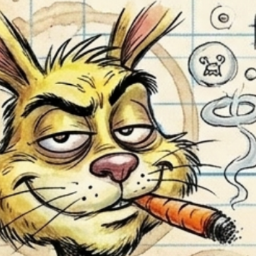

Enjoy conspiracy deep dives — {{ entryCount }} entries, zero truths guaranteed. Viewer discretion mandatory.
{{ titleText }}
{{ subtitleText }}
{{ selCatLabel }}
Tier {{ selTier }}
{{ selName }}
REDACTED
REDACTED
no verified image on file
{{ selSummary }}
“{{ selQuip }}” — FrizzleBob
{{ selStatusLabel }}
good neighbours ☞

Uncle FrizzleBob
the Fixer — fixes fractured worldviews
“Reality's rigged. Academia's apologetic. Philosophy's on parole.”
Outlaw epistemologist. Reluctant subcontractor for institutions that deny hiring him. He doesn't solve problems — he exposes the fracture: submit your paradox, await the FrizzleFix, reboot the absurd. No doctrine survives contact. No sacred cow leaves intact.
Selected work history
Men in Black — field fixer, 1954–present (unofficial, denied, poorly redacted)
Operation Paperclip — post-event consultant, 1945 (advised both sides to read a book; ignored)
Waterloo Asset Recovery — shadow analyst, 1815 (witnessed the first central-bank psyop; still billing)
Göbekli Tepe Restoration Crew — 9600 BC (told the team to label things; humanity never recovered)
Stay fluffy.
Uncle FrizzleBob (Worldview Fixer, Reality-Wrestler, Epistemic Outlaw)
Uncle FrizzleBob (Worldview Fixer, Reality-Wrestler, Epistemic Outlaw)
{{ r.name }}
T{{ r.tier }}
Uncle FrizzleBob
tour guide · {{ maskLabel }}
{{ m.rich }}
FrizzleBob is adjusting his tinfoil…
drag to dive & orbit · scroll to zoom · W A S D · click an entry